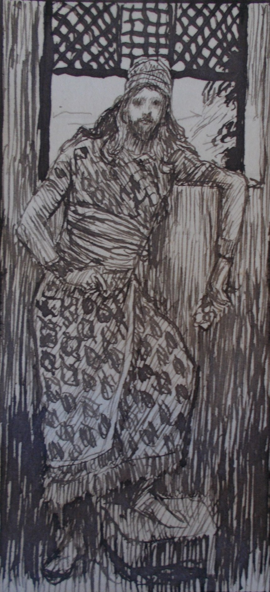

2 Samuel 14 — The Mister Translation

2 Samuel 14. This is one of the pen and ink sketches Tissot made for his Old Testament illustrations; the museum catalogue ties it to 14:25, where Absalom is praised for his beauty from sole to crown. He is drawn as a figure of rank, with the long hair of the next verse, and the artist adds nothing about the two full years in Jerusalem or the kiss. The sketch was photographed on its side and has been turned upright and cropped to the drawing.

Translator's Notes — verse by verse
The king’s heart was toward Absalom. “And Joab son of Zeruiah knew that the king’s heart was toward Absalom”: the Hebrew preposition is ‘al, “upon”, and it does not say whether the heart is upon Absalom for him or against him. The chapter before ends with David longing to go out to him (2 Samuel 13:39, already on these pages), and Joab reads that longing and acts on it. The KJV has “was toward Absalom”. The NWT 1984 has “was toward Absalom” too. The NIV has “longed for Absalom”. The Douay has “was turned to Absalom”. The TLB has “how much the king was longing to see Absalom”. The Greek has hē kardia tou basileōs epi Abessalōm.
A wise woman. “And Joab sent to Tekoa, and took from there a wise woman”: “a wise woman” (ishah chakhamah) stands in two verses, this one and the wise woman of Abel (2 Samuel 20:16). Tekoa is the town of the sheep-breeder Amos (Amos 1:1, already on these pages). Her instructions are “Please mourn”: the Hebrew has the ordinary verb for mourning and does not say “pretend”. The ASV has “feign thyself to be a mourner”. The Douay has “Feign thyself to be a mourner”. The NIV has “Pretend you are in mourning”. The NWT 1984 has “Go in mourning, please”, which keeps to the Hebrew. The pretending is in the plan, and the clothes and the unanointed head are what a mourner of many days looks like.
Put the words in her mouth. “So Joab put the words in her mouth”: “Joab put the words in her mouth” stands in one verse. It is the language of Exodus 4:15 (already on these pages), where Jehovah tells Moses to speak to Aaron and “put the words in his mouth”, and in verse 19 the woman says it back to the king, “he himself put all these words in the mouth of your maidservant”. The ASV has “So Joab put the words in her mouth”. The Geneva has “(for Joab taught her what she should say)”.
Save, O king. “And the Tekoite woman said to the king, and she fell on her face to the ground, and bowed down; and she said: ‘Save, O king!’”: the Hebrew has “said” where the sense wants “came”. The NIV has “went to the king”. The NWT 1984 has “proceeded to come in to the king”. The Douay has “was come in to the king”. Her cry is hoshi‘ah, an imperative of “save”. The KJV has “Help, O king”. The ASV has “Help, O king”. The NWT 1984 has “Do save, O king!”. The TLB has “O king! Help me!”.
Two sons in the field. “And your maidservant had two sons, and the two of them quarreled in the field”, with no rescuer between them, “and the one struck the other, and killed him”: two brothers, a field and a killing are Genesis 4:8 (already on these pages), though the verb for the killing here is “caused to die”, and the woman does not say what the quarrel was. The word for the one who is missing, matsil, “one who rescues”, is the one used of the wife in Deuteronomy 25:11 (already on these pages), who “comes near to rescue her husband” when men fight. The NWT 1984 has “no deliverer to part them”. The NIV has “was there to separate them”. The KJV has “none to part them”.
My coal. “So they will quench my coal that is left, so as not to set a name or a remnant for my husband on the face of the ground”: “coal” (gachelet) stands in two verses, this and Isaiah 47:14, and here it is the last ember of a household. The family wants the heir, and a name and a remnant would go with him. The NIV has “put out the only burning coal I have left”. The KJV has “quench my coal which is left”. The NWT 1984 has “extinguish the glow of my charcoals”. The written text of verse 7 has a different form, shum, and the reading tradition has sim, both of the verb “to set”, so the sense is the same.
On me be the iniquity. “On me, my lord the king, be the iniquity, and on my father’s house; and the king and his throne are innocent”: she takes the guilt of the king’s decision on herself, and she says that he and his throne will have none. The NIV has “Let my lord the king pardon me and my family”. The KJV has “the iniquity be on me”. The NWT 1984 has “Upon me, O my lord the king, be the error”. The TLB has “I’ll take the responsibility”. By verse 13 the king’s throne is no longer innocent.
Not one hair. “Let the king remember, please, Jehovah your God, so that the redeemer of blood not multiply the destroying”: “the redeemer of blood” (go’el haddam) stands in eleven verses: five in Numbers 35, two in Deuteronomy 19, three in Joshua 20 (all already on these pages), and this one, the only narrative in which the redeemer appears. The written text of verse 11 has meharbit and the reading tradition meharbat, both “multiplying”. The ASV has “the avenger of blood destroy not any more”. The KJV has “the revengers of blood”. The NIV has “prevent the avenger of blood from adding to the destruction”. The king swears “As Jehovah lives, not one hair of your son shall fall to the ground”: the oath about the hair of the head stands in three verses, here, 1 Samuel 14:45 (where the people save Jonathan) and 1 Kings 1:52 (where Solomon spares Adonijah, if he proves worthy), the second and third already on these pages. The NIV has “not one hair of your son’s head will fall to the ground”. The TLB has “not a hair of your son’s head shall be disturbed”. The Greek has plēthunthēnai agchistea, “that the next of kin be multiplied”.
As one guilty. “Why then have you thought such a thing against the people of God? For in the king’s speaking this word he is as one guilty, in that the king does not bring back his banished one”: a parable told to a king, and the king’s own verdict turned on him, as Nathan’s was (2 Samuel 12:5–7, already on these pages: “the man who did this is a son of death”, and “You are the man”). The word is ashem, “guilty”. The NIV has “does he not convict himself”. The KJV has “as one which is faulty”. The ASV has “as one that is guilty”. The TLB has “You have convicted yourself”. The woman says nothing of her own son now; the people of God are the case.
Water poured on the ground. “For we shall surely die, and are like water poured out on the ground, which cannot be gathered up”: “we shall surely die” (mot namut) stands in two verses, here and Manoah’s “We will surely die” (Judges 13:22, already on these pages). Then the verse turns: “and God does not lift up a soul, and he devises devices, so that no banished one be banished from him”. “God does not lift up a soul” (lo yissa Elohim nefesh) stands in one verse, and it can mean that God does not take a life, or that he does not show partiality. The ASV has “neither doth God take away life”. The NWT 1984 has “God will not take away a soul”. The KJV has “neither doth God respect any person”. The Douay has “neither will God have a soul to perish”. The Greek has lēmpsetai ho theos psuchēn, “God will take a soul”. The root of “banished” (nidach) runs through verses 13 and 14: the king’s nidcho, God’s yiddach and niddach.
The inheritance of God. “And now, that I have come to speak this word to my lord the king — it is because the people made me afraid”: in the story the family threatened her, and now it is “the people”. “To deliver his maidservant from the hand of the man who would destroy me and my son together from the inheritance of God”: “the inheritance of God” (nachalat Elohim) stands in one verse, and it is David’s own complaint at 1 Samuel 26:19 (already on these pages), where men have driven him out from “the inheritance of Jehovah”. The KJV has “out of the inheritance of God”. The NIV has “from God’s inheritance”. The NWT 1984 has “from the inheritance given by God”.
For rest. “Let the word of my lord the king be for rest”: the word is menuchah, “rest”. The KJV has “comfortable”. The NWT 1984 has “serve, please, to give rest”. The NIV has “secure my inheritance”. The Douay has “be made as a sacrifice”. The Greek has eis thusian, “for a sacrifice”, as if it read minchah, “an offering”. “For like an angel of God, so is my lord the king in hearing the good and the bad”: “like the angel of God” stands in two verses, here and the next time it is said of David, by Mephibosheth (2 Samuel 19:28). Achish had said “as an angel of God” of David, without the article (1 Samuel 29:9, already on these pages). “To hear the good and the bad” stands in one verse.
The hand of Joab. “Is the hand of Joab with you in all this?”: the king asks the question the reader has been asking. “As your soul lives, my lord the king”: the oath is Abner’s (1 Samuel 17:55, “By the life of your soul”), David’s to Jonathan (1 Samuel 20:3) and Abigail’s to David (1 Samuel 25:26, all already on these pages), and Uriah’s (2 Samuel 11:11, already on these pages). The NIV has “As surely as you live”. The KJV has “As thy soul liveth”. The Douay has “By the health of thy soul”.
The right and the left. She says that the king’s word cannot be turned “to the right or to the left from all that my lord the king has spoken”: “to turn to the right or to the left” (lehamin ulehasmil) stands in one verse, two verbs made from the nouns for “right” and “left”. The NIV has “turn to the right or to the left from anything my lord the king says”. The ASV has “none can turn to the right hand or to the left”. The Douay has “it is neither on the left hand, nor on the right”. She says he cannot be deceived, and in the same breath says that she was.
The face of the matter. “To turn about the face of the matter, your servant Joab did this thing”: “to turn about the face of the matter” stands in one verse, and it means to change how a thing looks, not what it is. The ASV has “to change the face of the matter”. The NWT 1984 has “For the sake of altering the face of the matter”. The KJV has “To fetch about this form of speech”. The NIV has “to change the present situation”. Then comes the flattery: “but my lord is wise, like the wisdom of the angel of God, to know all that is in the land”. “like the wisdom of the angel of God” stands in one verse. The Greek has tou perielthein to prosōpon tou rhēmatos, “to go around the face of the word”.
The young man, Absalom. “Look, I have done this thing; go, bring back the young man, Absalom”: the word is na‘ar, “young man”, and it is the word the king will use when he gives the commanders their charge for the battle, “the young man, even Absalom” (2 Samuel 18:5). The NIV has “Very well, I will do it”. The KJV has “Behold now, I have done this thing”. The NWT 1984 has “I shall certainly do this thing”. The Douay has “Behold I am appeased”.
Joab’s bow. “And Joab fell on his face to the ground, and bowed down, and blessed the king”: it is the third bow of the chapter, after the woman’s (verse 4) and before Absalom’s (verse 33). The word for what he does to the king is vayevarekh, “blessed”. The KJV has “thanked the king”. The ASV has “did obeisance, and blessed the king”. The NIV has “to pay him honor”. The Douay has “adored”. Joab says “Today your servant knows that I have found favor in your eyes”, and the written text of verse 22 has “his servant” where the reading tradition has “your servant”.
My face he shall not see. “Let him turn to his own house, and my face he shall not see”: Joab goes to Geshur and brings Absalom to Jerusalem (2 Samuel 13:38, already on these pages: three years there), and the king says that his house is where he shall stay. “the king’s face he did not see” stands in two verses, this one and verse 28. “You shall not see my face” is Judah’s report of what Joseph said (Genesis 43:3) and Pharaoh’s to Moses (Exodus 10:28, both already on these pages). The NIV has “he must not see my face”. The NWT 1984 has “my face he may not see”. The KJV has “let him not see my face”.
No blemish. “From the sole of his foot to the crown of his head there was no blemish in him”: “from the sole of his foot to the crown of his head” stands in two verses, here and Job 2:7. The second-person form is the curse on the disobedient, “from the sole of your foot to the crown of your head” (Deuteronomy 28:35, already on these pages), and Isaiah has “from the sole of the foot to the head there is nothing sound” (Isaiah 1:6, already on these pages). “There is a blemish in it” (bo mum) stands in seven verses: Leviticus 21:17, 18, 21 and 22:20, Deuteronomy 15:21 and 17:1 (Deuteronomy 15:21, 17:1), and this one. Every other time it is a reason to refuse a sacrifice or a priest, and here it is a reason to praise a man. The NIV has “there was no blemish in him”. The KJV has “there was no blemish in him” as well. The NWT 1984 has “no defect in him”. The Douay has “so exceedingly beautiful”.
Two hundred shekels. “He weighed the hair of his head: two hundred shekels by the king’s stone”: “two hundred shekels” stands in two verses, this and the two hundred shekels of silver that Achan took (Joshua 7:21, already on these pages). At about eleven grams to the shekel the hair weighed about two kilograms and a quarter; the “king’s stone” is not known as a measure outside this verse, and the Hebrew does not say that he cut it once a year, only “at the end of days, to days”. The NIV has “by the royal standard”. The KJV has “after the king’s weight”. The NWT 1984 has “by the royal stone weight”. The Douay has “according to the common weight”. The head that Absalom is proud of is the head that catches in the oak (2 Samuel 18:9), where the verse says his head was caught, not his hair.
Tamar. “And there were born to Absalom three sons, and one daughter whose name was Tamar; she was a woman beautiful of appearance”: the sons are not named and the daughter has the name of the woman of chapter 13, and the words for her are those used of Sarai, “a woman beautiful of appearance” (ishah yefat mar’eh), which stands in two verses, here and Genesis 12:11 (already on these pages). The Greek adds that she became the wife of Rehoboam son of Solomon and bore him Abia; the Hebrew does not, and Kings and Chronicles name the mother of Abijah as Maacah, daughter of Abishalom or Absalom (1 Kings 15:2; 2 Chronicles 11:20). The KJV has “a woman of a fair countenance”. The ASV has “a woman of a fair countenance”. The NIV has “she became a beautiful woman”. The NWT 1984 has “a woman most beautiful in appearance”.
Two full years. “And Absalom lived in Jerusalem two full years, and the king’s face he did not see”: “two full years” (shenatayim yamim) stands in five verses: Genesis 41:1, 2 Samuel 13:23, this verse and Jeremiah 28:3 and 28:11, all but this one already on these pages. The two years before the shearing and these two in Jerusalem are the same words. The ASV has “two full years”. The NWT 1984 has “two full years”. The NIV has “two years”. The Douay has “two years”.
Joab’s plot on fire. “And he said to his servants: ‘See, Joab’s plot is beside mine, and he has barley there; go and set it on fire’”: Absalom sends twice for Joab and Joab twice is not willing to come, so he burns Joab’s barley. The verb is the one that burns Ai (Joshua 8:19) and the tower of Shechem (Judges 9:49, both already on these pages). The written text of verse 30 has a different form, vehotzitiah, and the reading tradition has vehatzitu‘ah, “and set it on fire”. The NIV has “Joab’s field is next to mine”. The KJV has “Joab’s field is near mine”. The NWT 1984 has “Joab’s tract of land beside mine”. The ASV has “Joab’s field is near mine”. The Greek and the Douay add that Joab’s servants came with their garments torn to say that part of the field was burned.
If there is iniquity in me. “Why have I come from Geshur? It would be good for me to be there still. And now let me see the king’s face; and if there is iniquity in me, let him put me to death”: “if there is iniquity in me” (im yesh-bi avon) stands in two verses, here and David’s own words to Jonathan (1 Samuel 20:8, already on these pages: “put me to death yourself”). The verb for the killing, vehemitani, is the same verb Absalom gave his servants for Amnon (2 Samuel 13:28, already on these pages). The NIV has “if I am guilty of anything, let him put me to death”. The KJV has “if there be any iniquity in me”. The NWT 1984 has “if there is any error in me”. The ASV has “if there be iniquity in me, let him kill me”.
The king kissed Absalom. “And he came to the king, and bowed down on his face to the ground before the king; and the king kissed Absalom”: “and the king kissed” stands in two verses, here and 2 Samuel 19:40, and it is a kiss like Esau’s at Genesis 33:4 and Joseph’s at Genesis 45:15 (both already on these pages). No word of David’s is recorded here, after the king’s “my face he shall not see” of verse 24. The NIV has “the king kissed Absalom”. The NWT 1984 has “the king kissed Abʹsa·lom”. The Greek has kai katephilēsen ho basileus ton Abessalōm.
Patterns worth carrying forward
Where this translation keeps the words exact and distinct: “a wise woman”; “Save, O king!”; “the redeemer of blood”, as in Numbers 35 and Joshua 20; “iniquity” for avon; “my coal”; “as one guilty”; “banished”; “for rest”; “to turn about the face of the matter”; “the young man”; “the king’s stone”; “plot”; and the pointed readings “your servant” and “and set it on fire”, with the written forms in the notes.
Echoes paid. Moses and Aaron’s words in the mouth (Exodus 4:15); Cain and Abel’s field (Genesis 4:8); the wife who tries to rescue (Deuteronomy 25:11); the redeemer of blood (Numbers 35; Deuteronomy 19:6, 12; Joshua 20:3, 5, 9); the hair that does not fall (1 Samuel 14:45; 1 Kings 1:52); Nathan’s “You are the man” (2 Samuel 12:5–7); Manoah’s “We will surely die” (Judges 13:22); the inheritance of Jehovah (1 Samuel 26:19); the angel of God (1 Samuel 29:9); “as your soul lives” (1 Samuel 17:55; 20:3; 25:26; 2 Samuel 11:11); the face not to be seen (Genesis 43:3; Exodus 10:28); the sole to the crown (Deuteronomy 28:35; Isaiah 1:6); Achan’s two hundred shekels (Joshua 7:21); Sarai’s beauty (Genesis 12:11); two full years (Genesis 41:1; 2 Samuel 13:23; Jeremiah 28:3, 11); the burned cities (Joshua 8:19; Judges 9:49); David’s “if there is iniquity in me” (1 Samuel 20:8); and the kisses of Esau and Joseph (Genesis 33:4; 45:15).
Echoes planted. The wise woman of Abel (2 Samuel 20:16); the head caught in the oak and the young man Absalom (2 Samuel 18:5, 9); the pillar for a man with no son (2 Samuel 18:18); Mephibosheth’s “like the angel of God” and the king’s kiss for Barzillai (2 Samuel 19:28, 40); “Save” in the Psalms (Psalm 20:10); Isaiah’s coal (Isaiah 47:14); the sole to the crown in Job (Job 2:7); and Maacah, daughter of Absalom (1 Kings 15:2; 2 Chronicles 11:20). None of these is translated here yet.
Next in this book: 2 Samuel 15 — Absalom makes himself a chariot and horses and fifty men to run before him, stands by the way of the gate and steals the hearts of the men of Israel; he asks leave to pay a vow in Hebron, sends spies with the sound of the horn and sends for Ahithophel; a messenger tells David that the hearts of the men of Israel are after Absalom, and David says: Arise, and let us flee.